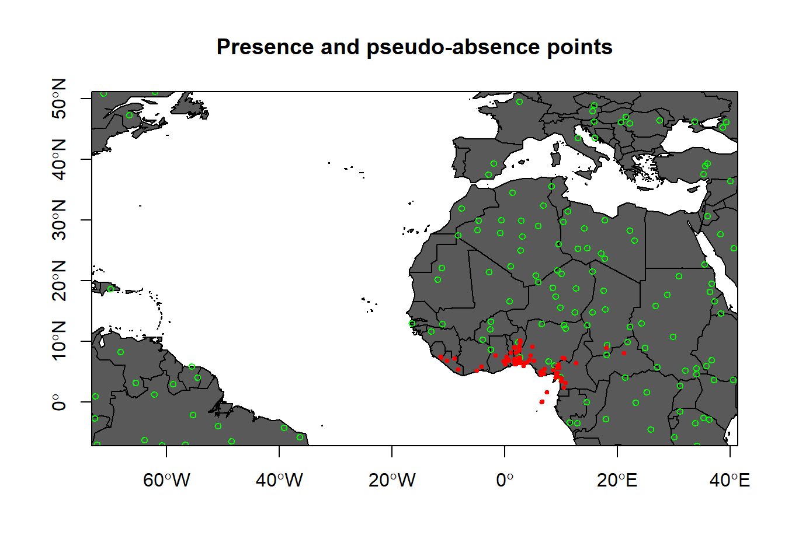
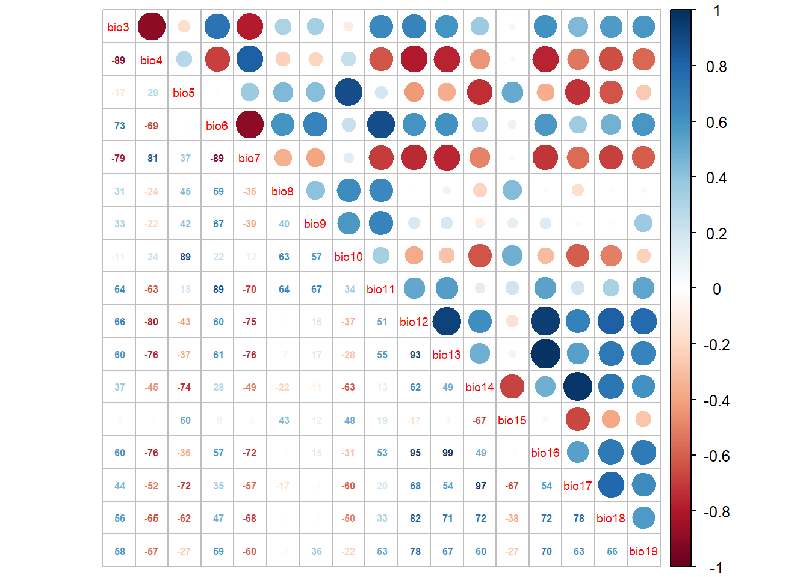
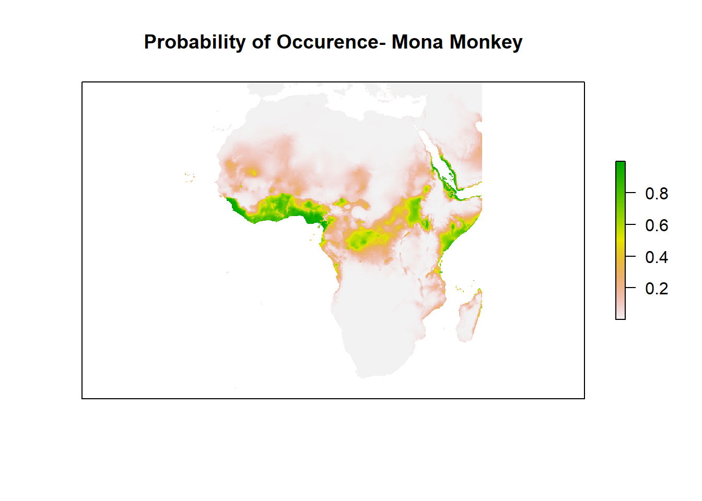
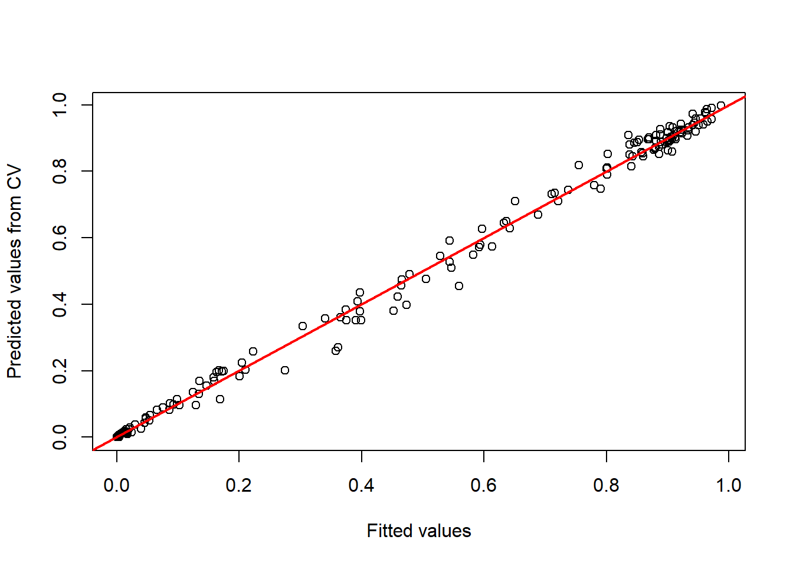
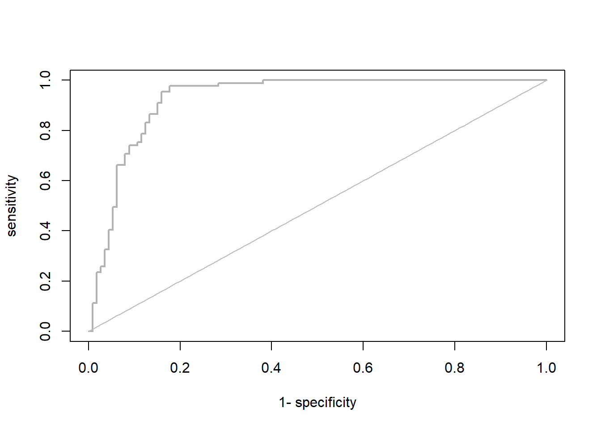

Chapter 7 If you check the “clean_Mona”, you will see there are many variables. We really don’t need all of them for analysis, so why not just retain the variables will only need
clean_Mona = clean_Mona[, c("species", "decimalLatitude", "decimalLongitude")]
# or through the dplyr package. Of course, you will get the same result
clean_Mona <-clean_Mona %>%
dplyr::select(species, decimalLatitude, decimalLongitude)Remember if the species list contains the name of the species. We need it in presence/absence format (I explained in class). So, let’s turn the species name to 1 (for presence)
Mona_P <- data.frame(clean_Mona, occ=1)
head(Mona_P)## species decimalLatitude decimalLongitude occ
## 3 Cercopithecus mona 7.038812 1.999688 1
## 4 Cercopithecus mona 0.045902 6.528708 1
## 5 Cercopithecus mona 6.956431 2.097323 1
## 7 Cercopithecus mona 7.721062 -1.701965 1
## 8 Cercopithecus mona 6.438185 3.534619 1
## 9 Cercopithecus mona 6.591946 3.948594 1# You see a new column is now added, called "occ" (as in short form of occurence)
# If you wish to export this clean data (e.g. to csv), for further analysis, you can do that now.
#write.csv(clean_Mona, "Mona_cleaned.csv", row.names = FALSE)Don’t forget that SDM (as in the case of correlative), we want to relate the species with their environment to understand factors affecting them.
So, let’s the Get the climate data.
7.0.1 Download Climate data
You can get climate data from worldclim, chelsa and paleoclim, among others.
# You may want to set directory to store it
if(!dir.exists("bioclim_data")){
dir.create("bioclim_data", recursive = TRUE)
}
clim_data <- getData(name = "worldclim",
var = "bio",
res = 5,
path = "bioclim_data",
download = T)In SDM, to every presence, there should be absence. As you may know, absence data are often not available and so we can generate background (or pseudo-absence) data.
7.0.2 Generate Background data
Let’s generate Background data using the climate data we just downloaded as the sampling resolution
bil.files <- list.files(path = "bioclim_data/wc5",
pattern = "*.bil$",
full.names = TRUE)
# Let's just use one of the .bil files to mask the background data, we don't really need all
mask <- raster(bil.files[1])
# Use the randomPoints function to randomly sample points. Now, we shall sample the same number of points as our observed points (and extend it by 1.25). By sampling same number of occurence point and giving a bit room for extension, we are conservative enough and reduce bias.
background <- randomPoints(mask = mask, n = nrow(Mona_P), ext = geographic.extent, extf = 1.25)How about we Plot them on map (presence and pseudo-absence)
plot(wrld_simpl,
xlim = c(min.lon, max.lon),
ylim = c(min.lat, max.lat),
axes = TRUE,
col = "grey35",
main = "Presence and pseudo-absence points")
# Add the background points
points(background, col = "green", pch = 1, cex = 0.75)
# Add the observations
points(x = Mona_P$decimalLongitude,
y = Mona_P$decimalLatitude,
col = "red",
pch = 20,
cex = 0.75)
box()
Now, what we can do is to join them together.
Mona_P = Mona_P[, c("decimalLongitude", "decimalLatitude", "occ")] # since we don't need the column "species" again, we can remove it.
background_dat <- data.frame(background) # put it in dataframe
summary(background_dat)## x y
## Min. :-72.792 Min. :-11.542
## 1st Qu.: -2.708 1st Qu.: 1.458
## Median : 12.958 Median : 14.792
## Mean : 4.572 Mean : 17.108
## 3rd Qu.: 29.167 3rd Qu.: 29.792
## Max. : 40.625 Max. : 55.042names(background_dat) <- c('decimalLongitude','decimalLatitude') # set the name of background_dat instead form "x" and "y" to Longitude and Latitude
background_dat$occ <- 0 # set absence data to 0 (remember we set presence to 1)
summary(background_dat)## decimalLongitude decimalLatitude occ
## Min. :-72.792 Min. :-11.542 Min. :0
## 1st Qu.: -2.708 1st Qu.: 1.458 1st Qu.:0
## Median : 12.958 Median : 14.792 Median :0
## Mean : 4.572 Mean : 17.108 Mean :0
## 3rd Qu.: 29.167 3rd Qu.: 29.792 3rd Qu.:0
## Max. : 40.625 Max. : 55.042 Max. :0Mona_PA <- rbind(Mona_P, background_dat) # use the "rbind" function to row bind them.
summary(Mona_PA)## decimalLongitude decimalLatitude occ
## Min. :-72.792 Min. :-11.542 Min. :0.0
## 1st Qu.: 1.738 1st Qu.: 5.896 1st Qu.:0.0
## Median : 2.686 Median : 6.909 Median :0.5
## Mean : 3.857 Mean : 11.830 Mean :0.5
## 3rd Qu.: 14.417 3rd Qu.: 14.792 3rd Qu.:1.0
## Max. : 40.625 Max. : 55.042 Max. :1.0Mona_PA = data.frame(Mona_PA)
dplyr::sample_n(Mona_PA, 10) # randomly check 10 observations## decimalLongitude decimalLatitude occ
## 92 2.512721 6.904417 1
## 240 9.400000 5.833300 1
## 321 -65.875000 -7.541667 0
## 110 2.427500 8.490000 1
## 541 -68.291667 8.291667 0
## 179 -13.125000 11.625000 0
## 259 18.000000 9.000000 1
## 125 2.166667 6.916667 1
## 751 14.041667 28.625000 0
## 1410 38.375000 14.625000 07.0.3 Extract the environmental data for the Mona coordinate
Mona_PA = cbind(Mona_PA, raster::extract(x = clim_data, y = data.frame(Mona_PA[,c('decimalLongitude','decimalLatitude')]), cellnumbers=T ))
# Check if there are duplicated cells
duplicated(Mona_PA$cells)## [1] FALSE FALSE FALSE FALSE FALSE FALSE TRUE FALSE FALSE FALSE FALSE FALSE FALSE TRUE TRUE FALSE TRUE
## [18] FALSE FALSE TRUE TRUE TRUE TRUE TRUE TRUE FALSE FALSE FALSE FALSE FALSE FALSE FALSE FALSE TRUE
## [35] FALSE FALSE FALSE TRUE FALSE FALSE FALSE FALSE FALSE FALSE FALSE FALSE TRUE FALSE FALSE TRUE TRUE
## [52] TRUE FALSE TRUE TRUE TRUE FALSE FALSE FALSE FALSE FALSE FALSE FALSE FALSE TRUE TRUE FALSE TRUE
## [69] TRUE FALSE FALSE TRUE FALSE FALSE FALSE TRUE FALSE FALSE FALSE FALSE FALSE FALSE TRUE TRUE FALSE
## [86] TRUE FALSE FALSE FALSE TRUE FALSE FALSE FALSE FALSE FALSE TRUE TRUE TRUE FALSE TRUE TRUE TRUE
## [103] TRUE TRUE FALSE TRUE TRUE FALSE TRUE FALSE FALSE FALSE FALSE FALSE FALSE FALSE FALSE FALSE FALSE
## [120] FALSE FALSE FALSE FALSE FALSE FALSE TRUE FALSE FALSE TRUE FALSE FALSE FALSE FALSE TRUE FALSE FALSE
## [137] FALSE FALSE FALSE FALSE FALSE FALSE FALSE FALSE FALSE FALSE TRUE FALSE FALSE FALSE FALSE FALSE FALSE
## [154] FALSE FALSE FALSE FALSE FALSE FALSE FALSE FALSE FALSE FALSE FALSE FALSE FALSE FALSE FALSE FALSE FALSE
## [171] FALSE FALSE FALSE FALSE FALSE FALSE FALSE FALSE FALSE FALSE FALSE FALSE FALSE FALSE FALSE FALSE FALSE
## [188] FALSE FALSE FALSE FALSE FALSE FALSE FALSE FALSE FALSE FALSE FALSE FALSE FALSE FALSE FALSE FALSE FALSE
## [205] FALSE FALSE FALSE FALSE FALSE FALSE FALSE FALSE FALSE FALSE FALSE FALSE FALSE FALSE FALSE FALSE FALSE
## [222] FALSE FALSE FALSE FALSE FALSE FALSE FALSE FALSE FALSE FALSE FALSE FALSE FALSE FALSE FALSE FALSE FALSE
## [239] FALSE FALSE FALSE FALSE FALSE FALSE FALSE FALSE FALSE FALSE FALSE FALSE FALSE FALSE FALSE FALSE FALSE
## [256] FALSE FALSE FALSE FALSE FALSE FALSE FALSE FALSE FALSE FALSE FALSE FALSE FALSE FALSE FALSE FALSE FALSE
## [273] FALSE FALSE FALSE FALSE FALSE FALSE FALSE FALSE FALSE FALSE FALSE FALSE FALSE FALSE FALSE FALSE FALSE
## [290] FALSE FALSE FALSE FALSE FALSE FALSE FALSE FALSE FALSE FALSE FALSE FALSE FALSE FALSE FALSE FALSE FALSE
## [307] FALSE FALSE FALSE FALSE FALSE FALSE FALSE FALSE FALSE FALSE FALSE FALSE FALSE FALSE FALSE FALSE FALSE
## [324] FALSE FALSE FALSE FALSE FALSE FALSE FALSE FALSE FALSE FALSE FALSEYou can see some duplicated cells, right? So, let’s retains non-duplicated cells (obviously, you don’t want to have duplicated cells in analysis)
Retain non-duplicated cells
Mona_PA <- Mona_PA[!duplicated(Mona_PA$cells),]
# Now check again if there are duplicated cells (I am certain it will all be FALSE now)
duplicated(Mona_PA$cells)## [1] FALSE FALSE FALSE FALSE FALSE FALSE FALSE FALSE FALSE FALSE FALSE FALSE FALSE FALSE FALSE FALSE FALSE
## [18] FALSE FALSE FALSE FALSE FALSE FALSE FALSE FALSE FALSE FALSE FALSE FALSE FALSE FALSE FALSE FALSE FALSE
## [35] FALSE FALSE FALSE FALSE FALSE FALSE FALSE FALSE FALSE FALSE FALSE FALSE FALSE FALSE FALSE FALSE FALSE
## [52] FALSE FALSE FALSE FALSE FALSE FALSE FALSE FALSE FALSE FALSE FALSE FALSE FALSE FALSE FALSE FALSE FALSE
## [69] FALSE FALSE FALSE FALSE FALSE FALSE FALSE FALSE FALSE FALSE FALSE FALSE FALSE FALSE FALSE FALSE FALSE
## [86] FALSE FALSE FALSE FALSE FALSE FALSE FALSE FALSE FALSE FALSE FALSE FALSE FALSE FALSE FALSE FALSE FALSE
## [103] FALSE FALSE FALSE FALSE FALSE FALSE FALSE FALSE FALSE FALSE FALSE FALSE FALSE FALSE FALSE FALSE FALSE
## [120] FALSE FALSE FALSE FALSE FALSE FALSE FALSE FALSE FALSE FALSE FALSE FALSE FALSE FALSE FALSE FALSE FALSE
## [137] FALSE FALSE FALSE FALSE FALSE FALSE FALSE FALSE FALSE FALSE FALSE FALSE FALSE FALSE FALSE FALSE FALSE
## [154] FALSE FALSE FALSE FALSE FALSE FALSE FALSE FALSE FALSE FALSE FALSE FALSE FALSE FALSE FALSE FALSE FALSE
## [171] FALSE FALSE FALSE FALSE FALSE FALSE FALSE FALSE FALSE FALSE FALSE FALSE FALSE FALSE FALSE FALSE FALSE
## [188] FALSE FALSE FALSE FALSE FALSE FALSE FALSE FALSE FALSE FALSE FALSE FALSE FALSE FALSE FALSE FALSE FALSE
## [205] FALSE FALSE FALSE FALSE FALSE FALSE FALSE FALSE FALSE FALSE FALSE FALSE FALSE FALSE FALSE FALSE FALSE
## [222] FALSE FALSE FALSE FALSE FALSE FALSE FALSE FALSE FALSE FALSE FALSE FALSE FALSE FALSE FALSE FALSE FALSE
## [239] FALSE FALSE FALSE FALSE FALSE FALSE FALSE FALSE FALSE FALSE FALSE FALSE FALSE FALSE FALSE FALSE FALSE
## [256] FALSE FALSE FALSE FALSE FALSE FALSE FALSE FALSE FALSE FALSE FALSE FALSE FALSE FALSE FALSE FALSE FALSE
## [273] FALSE FALSE FALSE FALSE FALSE FALSE FALSE FALSE FALSE FALSE FALSE FALSE FALSE FALSE FALSE FALSE FALSE
## [290] FALSECheck for missing values (NA)
any(is.na(Mona_PA)) # Check for NA## [1] TRUEClear enough right? We have missing values, so let’s remove them
Remove NA
Mona_PA = na.omit(Mona_PA) # remove NA
# check again. This time, it should be FALSE
any(is.na(Mona_PA))## [1] FALSEThat’s it. We can start the process of model fitting
Before we even start, its a good idea to test for multicollinearity (to be sure we don’t have multicollinear variables). I explained why this is not good in class- watch the video or read more online.
7.0.4 Test for Multicollinearity
Build a correlation matrix
cor_mat <- cor(Mona_PA[,-c(1:6)], method='spearman')
corrplot.mixed(cor_mat, tl.pos='d', tl.cex=0.6, number.cex=0.5, addCoefasPercent=T)
We can use a function called “select07” to remove highly correlated variables (variables greater than 70% = 0.7). (See Dorman et al 2013)
library(devtools)
#devtools::install_git("https://gitup.uni-potsdam.de/macroecology/mecofun.git")
library(mecofun)
# Run select07()
var_sel <- select07(X=Mona_PA[,-c(1:4)],
y=Mona_PA$occ,
threshold=0.7)## Warning: glm.fit: fitted probabilities numerically 0 or 1 occurred
## Warning: glm.fit: fitted probabilities numerically 0 or 1 occurred
## Warning: glm.fit: fitted probabilities numerically 0 or 1 occurred
## Warning: glm.fit: fitted probabilities numerically 0 or 1 occurred
## Warning: glm.fit: fitted probabilities numerically 0 or 1 occurred
## Warning: glm.fit: fitted probabilities numerically 0 or 1 occurred
## Warning: glm.fit: fitted probabilities numerically 0 or 1 occurred
## Warning: glm.fit: fitted probabilities numerically 0 or 1 occurred
## Warning: glm.fit: fitted probabilities numerically 0 or 1 occurred# Check out the structure of the resulting object:
str(var_sel)## List of 3
## $ AIC : Named num [1:19] 197 197 213 241 257 ...
## ..- attr(*, "names")= chr [1:19] "bio4" "bio6" "bio3" "bio7" ...
## $ cor_mat : num [1:19, 1:19] 1 -0.108 0.365 -0.277 0.494 ...
## ..- attr(*, "dimnames")=List of 2
## .. ..$ : chr [1:19] "bio1" "bio2" "bio3" "bio4" ...
## .. ..$ : chr [1:19] "bio1" "bio2" "bio3" "bio4" ...
## $ pred_sel: chr [1:9] "bio4" "bio6" "bio15" "bio19" ...# Extract the names of the weakly correlated predictors in order of their AIC:
pred_sel = var_sel$pred_sel
pred_sel## [1] "bio4" "bio6" "bio15" "bio19" "bio9" "bio10" "bio2" "bio8" "bio18"See important variables in that order
7.0.5 Model selection
We can fit different regression model to predict our species. This model can take linear function, quadratic or polynomial. We can then use vif or AIC to determine which one work best for this model. For the sake of this exercise, I will only fit Linear relationship.
# Take any bioclim variable and fit a GLM assuming a linear relationship:
model_linear <- glm(occ ~ bio19, family=binomial(link=logit), data= Mona_PA)
summary(model_linear) ##
## Call:
## glm(formula = occ ~ bio19, family = binomial(link = logit), data = Mona_PA)
##
## Deviance Residuals:
## Min 1Q Median 3Q Max
## -3.0272 -0.7494 -0.6247 1.0343 1.6464
##
## Coefficients:
## Estimate Std. Error z value Pr(>|z|)
## (Intercept) -1.5350688 0.2064067 -7.437 1.03e-13 ***
## bio19 0.0038553 0.0005399 7.141 9.26e-13 ***
## ---
## Signif. codes: 0 '***' 0.001 '**' 0.01 '*' 0.05 '.' 0.1 ' ' 1
##
## (Dispersion parameter for binomial family taken to be 1)
##
## Null deviance: 393.60 on 288 degrees of freedom
## Residual deviance: 310.23 on 287 degrees of freedom
## AIC: 314.23
##
## Number of Fisher Scoring iterations: 4Okay, let’s fit a quadratic relationship with the same bioclim var used above:
model_quad <- glm(occ ~ bio19 + I(bio19^2), family=binomial(link=logit), data= Mona_PA)
summary(model_quad)##
## Call:
## glm(formula = occ ~ bio19 + I(bio19^2), family = binomial(link = logit),
## data = Mona_PA)
##
## Deviance Residuals:
## Min 1Q Median 3Q Max
## -2.1023 -0.6376 -0.3866 0.7762 1.7656
##
## Coefficients:
## Estimate Std. Error z value Pr(>|z|)
## (Intercept) -2.557e+00 3.115e-01 -8.207 2.27e-16 ***
## bio19 1.071e-02 1.363e-03 7.860 3.83e-15 ***
## I(bio19^2) -6.134e-06 1.003e-06 -6.112 9.81e-10 ***
## ---
## Signif. codes: 0 '***' 0.001 '**' 0.01 '*' 0.05 '.' 0.1 ' ' 1
##
## (Dispersion parameter for binomial family taken to be 1)
##
## Null deviance: 393.60 on 288 degrees of freedom
## Residual deviance: 271.78 on 286 degrees of freedom
## AIC: 277.78
##
## Number of Fisher Scoring iterations: 4We can now use a Maximum likelihood estimator to select which model is best and fit the SDM. N.B- the lower your AIC, the better. So any model with AIC is the best model to be selected
AIC(model_linear) ## [1] 314.2324AIC(model_quad)## [1] 277.7795Voila! Ideally, including the interaction term (quadratic function) seems to make more sense for this model. However, as I said earlier, for the sake of this exercise, I will just continue with linear model to demonstrate what we really want to know. If you want to do more (include quadratic or anything), you can go ahead using the same model formula above or reach out to me if you have issues or concerns.
7.0.6 Fitting the model
Now that we know which model to fit, we can select the model and then evaluate the prediction.
# regression model
model = step(glm(occ ~ bio4 + bio6 + bio15 + bio19, family=binomial(link=logit), data= Mona_PA))## Start: AIC=183.44
## occ ~ bio4 + bio6 + bio15 + bio19## Warning: glm.fit: fitted probabilities numerically 0 or 1 occurred## Df Deviance AIC
## - bio15 1 173.53 181.53
## <none> 173.44 183.44
## - bio4 1 179.20 187.20
## - bio19 1 187.58 195.58
## - bio6 1 263.93 271.93
##
## Step: AIC=181.53
## occ ~ bio4 + bio6 + bio19
##
## Df Deviance AIC
## <none> 173.53 181.53
## - bio4 1 181.99 187.99
## - bio19 1 187.62 193.62
## - bio6 1 265.54 271.54summary(model)##
## Call:
## glm(formula = occ ~ bio4 + bio6 + bio19, family = binomial(link = logit),
## data = Mona_PA)
##
## Deviance Residuals:
## Min 1Q Median 3Q Max
## -3.10852 -0.30152 -0.00401 0.49153 1.94663
##
## Coefficients:
## Estimate Std. Error z value Pr(>|z|)
## (Intercept) -1.584e+01 2.342e+00 -6.762 1.36e-11 ***
## bio4 8.983e-04 2.862e-04 3.139 0.001697 **
## bio6 7.347e-02 1.034e-02 7.105 1.20e-12 ***
## bio19 2.205e-03 6.460e-04 3.413 0.000642 ***
## ---
## Signif. codes: 0 '***' 0.001 '**' 0.01 '*' 0.05 '.' 0.1 ' ' 1
##
## (Dispersion parameter for binomial family taken to be 1)
##
## Null deviance: 393.60 on 288 degrees of freedom
## Residual deviance: 173.53 on 285 degrees of freedom
## AIC: 181.53
##
## Number of Fisher Scoring iterations: 7#Let's see the plot of Occurrence
my_preds <- c('bio4', 'bio6', "bio15", "bio19")
bio_clim_df1 <- data.frame(rasterToPoints(clim_data[[my_preds]]))
any(is.na(bio_clim_df1))## [1] TRUEbio_clim_df1<- na.omit(bio_clim_df1)
Model_glm_pred <- rasterFromXYZ(cbind(bio_clim_df1[,1:2],predict(model, bio_clim_df1, type='response')))
plot((Model_glm_pred),
xlim = c(min(Mona_PA$decimalLongitude),max (Mona_PA$decimalLongitude)),
ylim = c(min(Mona_PA$decimalLatitude), max(Mona_PA$decimalLatitude)),
main='Probability of Occurence', axes=F) 
Good. You can see the habitat suitability right? or the probability of occurrence for Mona Monkey. How about we zoom in to Africa and check it well?
Run the code below to zoom into Africa
plot((Model_glm_pred),
xlim = c(min(-25),max (50)),
ylim = c(min(-40), max(40)),
main='Probability of Occurence- Mona Monkey', axes=F) 
You may want to assess the goodness of fit
# Explained deviance:
expl_deviance(obs = Mona_PA$occ,
pred = model$fitted)## [1] 0.559134649.8% of the predictors explained the deviance in the model
Okay, that’s not what we want to do with SDM here. Let’s transfer the probability of occurence to binary prediction
7.0.7 Model evaluation and validation
Because we need to evaluate the prediction (of course if you write exam, you want to know how well you perform), so we need to set up evaluation dataset. The approach to do this (as in remote sensing) is to divide (randomly) the data into testing and training. So, let’s set out 70% of our Mona monkey as training data and the remaining 30% for testing later. Lastly, we have selected linear function up there, so we are good to go and can fit different algorithms now.
Split and train the model
# Use 70% for training data (of course you can change it and use 60 or 80% depending on you)
train_data <- sample(seq_len(nrow(Mona_PA)), size=round(0.7*nrow(Mona_PA)))
# Okay, let's subset the training & testing data
Mona_train <- Mona_PA[train_data,]
Mona_test <- Mona_PA[-train_data,]
# If you want to store the split information for later use, use this code:
#write(train_data, file = "Mona_traindata.txt")
#remember I said we can store other file than csv alone right?)Using our GLM regression (but now on the training data) to evaluate how well it perform
model_glm = step(glm(occ ~ bio4 + bio6 + bio15 + bio19, family=binomial(link=logit), data= Mona_train))## Start: AIC=133.16
## occ ~ bio4 + bio6 + bio15 + bio19
##
## Df Deviance AIC
## - bio15 1 123.17 131.17
## <none> 123.16 133.16
## - bio4 1 128.90 136.90
## - bio19 1 130.47 138.47
## - bio6 1 184.25 192.25
##
## Step: AIC=131.17
## occ ~ bio4 + bio6 + bio19
##
## Df Deviance AIC
## <none> 123.17 131.17
## - bio4 1 129.74 135.74
## - bio19 1 130.60 136.60
## - bio6 1 185.95 191.95summary(model_glm)##
## Call:
## glm(formula = occ ~ bio4 + bio6 + bio19, family = binomial(link = logit),
## data = Mona_train)
##
## Deviance Residuals:
## Min 1Q Median 3Q Max
## -2.95547 -0.29929 -0.00348 0.48366 2.02285
##
## Coefficients:
## Estimate Std. Error z value Pr(>|z|)
## (Intercept) -1.574e+01 2.877e+00 -5.471 4.49e-08 ***
## bio4 9.193e-04 3.352e-04 2.742 0.0061 **
## bio6 7.370e-02 1.284e-02 5.740 9.48e-09 ***
## bio19 1.799e-03 7.148e-04 2.517 0.0118 *
## ---
## Signif. codes: 0 '***' 0.001 '**' 0.01 '*' 0.05 '.' 0.1 ' ' 1
##
## (Dispersion parameter for binomial family taken to be 1)
##
## Null deviance: 277.17 on 201 degrees of freedom
## Residual deviance: 123.17 on 198 degrees of freedom
## AIC: 131.17
##
## Number of Fisher Scoring iterations: 7You may want to check the response curve
my_preds = c("bio4", "bio6", "bio15", "bio19")
preds_cv <- crossvalSDM(model_glm, traindat = Mona_train, colname_species = 'occ', colname_pred = my_preds)
plot(model_glm$fitted.values, preds_cv, xlab='Fitted values', ylab='Predicted values from CV')
abline(0,1,col='red',lwd=2)
Before we map the prediction, let’s threshold the data (and try check the threshold independent metrics- AUC)
Thresholding
library(PresenceAbsence)
# Cross-validated predictions:
threshold_data <- data.frame(ID = seq_len(nrow(Mona_train)), obs = Mona_train$occ, pred = preds_cv)
# Get the optimal thresholds:
(threshold_optimal <- PresenceAbsence::optimal.thresholds(DATA= threshold_data))## Warning in PresenceAbsence::optimal.thresholds(DATA = threshold_data): req.sens defaults to 0.85## Warning in PresenceAbsence::optimal.thresholds(DATA = threshold_data): req.spec defaults to 0.85## Warning in PresenceAbsence::optimal.thresholds(DATA = threshold_data): costs assumed to be equal## Method pred
## 1 Default 0.5000000
## 2 Sens=Spec 0.4850000
## 3 MaxSens+Spec 0.3700000
## 4 MaxKappa 0.3700000
## 5 MaxPCC 0.3700000
## 6 PredPrev=Obs 0.5350000
## 7 ObsPrev 0.4405941
## 8 MeanProb 0.4402461
## 9 MinROCdist 0.3700000
## 10 ReqSens 0.5000000
## 11 ReqSpec 0.4800000
## 12 Cost 0.3700000Good. You can now use any values above to threshold your species data to “presence” and “absence”
# Threshold using the max sen+spec
# Print the confusion Matrix
(cmx_maxSSS <- PresenceAbsence::cmx(DATA= threshold_data, threshold=threshold_optimal[3,2]))## observed
## predicted 1 0
## 1 85 18
## 0 4 95Let’s compute AUC
library(AUC)
# Let's have a look a the ROC curve:
roc_cv <- roc(preds_cv, as.factor(Mona_train$occ))
plot(roc_cv, col = "grey70", lwd = 2)
Compute the AUC and other evaluation metrics:
(evaluation_metrics = evalSDM(Mona_train$occ, preds_cv, thresh.method = "MaxSens+Spec"))## AUC TSS Kappa Sens Spec PCC D2 thresh
## 1 0.9281098 0.7957641 0.7826895 0.9550562 0.840708 0.8910891 0.5246774 0.37We can now validate the model performance on the test data
(performance_glm <- evalSDM(Mona_test$occ, predict(model_glm, Mona_test[,my_preds], type='response'), thresh.method = "MaxSens+Spec"))## AUC TSS Kappa Sens Spec PCC D2 thresh
## 1 0.9393939 0.7441077 0.7529813 0.8181818 0.9259259 0.8850575 0.5591624 0.49Please note-
Sensitivity = true positive rate Specificity = true negative rate PCC = Proportion of correctly classified observations,
We can evaluate if the model is good or not with TSS (true skill statistics or Kappa). You can also chekc AUC (Area under the curve). You may ask which curve, the ROC curve- Receiver operating characteristics.
7.0.8 Map prediction
Now, let’s check the Map prediction by plotting the main binary map with the data-
bio_clim_df_2 <- data.frame(rasterToPoints(clim_data[[my_preds]]))
any(is.na(bio_clim_df_2))## [1] TRUEbio_clim_df_2<- na.omit(bio_clim_df_2)
binary_glm <- predicted_glm <- rasterFromXYZ(cbind(bio_clim_df_2[,1:2],predict(model_glm, bio_clim_df_2, type='response')))
values(binary_glm) <- ifelse(values(predicted_glm)>= performance_glm$thresh, 1, 0)
plot(stack(predicted_glm, binary_glm),
xlim = c(min(-25),max (50)),
ylim = c(min(-40), max(40)),
main=c('Probability of Occurrence-Mona','Binary Prediction-Mona'), axes=F) 
Now, you can see the binary prediction of Mona Monkey throughout Africa.
Great! We stopped here in class. I will update the book later as time permits (check back soon):
- Transfer this prediction to future (2050 or 2070)
- Use different model algorithms (random forest, boosted regression trees, etc)
- Ensemble the models (to account for model uncertainty) and lots more.
If you have questions, feel free to ask email me or slack me.